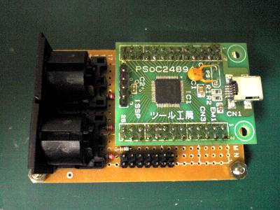

このコンテンツは、PSoC1を使用したUSB MIDIの実験です。
USBのベンダIDはないので、実行バイナリの配布はありません。
（PSoC3,PSoC5では、USB MIDIが対応された様なのだが、PSoC1での対応は？？？。）
●送信
220 4 ___________
+5V ---^v^v^v---| |
2| |
NC -| DIN(5pin) | Out
220 5| 1,3pin:NC |
UART Tx Port ---^v^v^v---|___________|
(Open Drain Low)
●受信
560 4 _______ 3 5 ___________
UART Rx Port ---V---| |- NC ,----------------------| |
5| |2 | A K 2| |
GND ----------------| PC900 |------*---|>|---, FG ---| DIN(5pin) | In
6| _ |1 | 220 4| 1,3pin:NC |
+5V ----------------|__| |__|----------------*---^v^v^v---|___________|
---|>|---:diode ---^v^v^v---:resistor ---V---:+5V resistor pull up
※ ツール工房さんのPSoC24894を使用して、なんとなく動いたので公開。（勿論、何の保証もありません。）
WIZARD: equ 0
WIZARD_DEFINED_REPORT_STORAGE: equ 0
;---------------------------------------------------
;@PSoC_UserCode_BODY_1@ (Do not change this line.)
;---------------------------------------------------
; Insert your custom code below this banner
;---------------------------------------------------
; Redefine the WIZARD equate to 0 below by
; uncommenting the WIZARD: equ 0 line
; to allow your custom descriptor to take effect
;---------------------------------------------------
include "usbmidi_descr.inc"
;---------------------------------------------------
; Insert your custom code above this banner
;---------------------------------------------------
;@PSoC_UserCode_END@ (Do not change this line.)
_UART_TX_ISR:
;@PSoC_UserCode_BODY_1@ (Do not change this line.)
;---------------------------------------------------
; Insert your custom assembly code below this banner
;---------------------------------------------------
; NOTE: interrupt service routines must preserve
; the values of the A and X CPU registers.
;---------------------------------------------------
; Insert your custom assembly code above this banner
;---------------------------------------------------
;---------------------------------------------------
; Insert a lcall to a C function below this banner
; and un-comment the lines between these banners
;---------------------------------------------------
;PRESERVE_CPU_CONTEXT
;lcall _My_C_Function
;RESTORE_CPU_CONTEXT
PRESERVE_CPU_CONTEXT
lcall _uart_tx_int
RESTORE_CPU_CONTEXT
;---------------------------------------------------
; Insert a lcall to a C function above this banner
; and un-comment the lines between these banners
;---------------------------------------------------
;@PSoC_UserCode_END@ (Do not change this line.)
（～～～途中省略～～～）
_UART_RX_ISR:
;@PSoC_UserCode_BODY_2@ (Do not change this line.)
;---------------------------------------------------
; Insert your custom assembly code below this banner
;---------------------------------------------------
; NOTE: interrupt service routines must preserve
; the values of the A and X CPU registers.
;---------------------------------------------------
; Insert your custom assembly code above this banner
;---------------------------------------------------
;---------------------------------------------------
; Insert a lcall to a C function below this banner
; and un-comment the lines between these banners
;---------------------------------------------------
;PRESERVE_CPU_CONTEXT
;lcall _My_C_Function
;RESTORE_CPU_CONTEXT
PRESERVE_CPU_CONTEXT
lcall _uart_rx_int
RESTORE_CPU_CONTEXT
;---------------------------------------------------
; Insert a lcall to a C function above this banner
; and un-comment the lines between these banners
;---------------------------------------------------
;@PSoC_UserCode_END@ (Do not change this line.)
